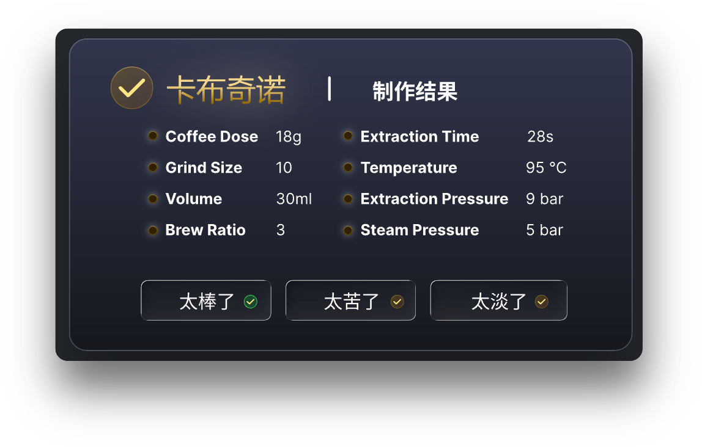

Coffee machine platform solution
The coffee machine case demonstrates how to combine UI, sensors, actuators, algorithms, communication, and exception handling into a complete product workflow. The page is not an isolated interface, but a visual entry of the device state machine: user operations must be consistent with the waterway, temperature control, pressure, and safety interlocks.
Resident Pages


The resident layer can integrate self-check, identity verification, energy saving, time, weather, dynamic backgrounds, status icons, and shortcut settings. State data is uniformly published by the business layer, and pages only subscribe to the normalized view model, avoiding each control directly reading hardware.
void coffee_home_update(const coffee_status_t *status)
{
ui_set_temperature(status->water_temperature_c);
ui_set_supply_level(COFFEE_SUPPLY_BEANS, status->bean_percent);
ui_set_network_state(status->network_state);
ui_set_alarm_visible(status->alarm_count != 0);
}
Work Pages

The workflow can be divided into roast degree recognition, programmable pressure control, precise temperature control, TDS adaptive extraction, and milk froth control. Each step should define entry conditions, target values, timeouts, cancelable points, and failover, rather than inferring device status from progress animations.
Stage |
Main Input |
Main Output |
|---|---|---|
Preheating |
Temperature, flow, water level, lid/tank status |
Heater and pump control |
Grinding and tamping |
Bean amount, grind settings, motor current, encoder |
Motor speed and stall protection |
Extraction |
Pressure, temperature, flow, TDS, time |
Pump, valve, heater power curve |
Completion |
Yield, duration, alarms, and user recipes |
Result display, cleaning reminders, and recipe records |
User Feedback

Evaluation and taste memory should save “recipe version actual process data user rating”, rather than just recording star ratings. The next time preferences are applied, they still need to be trimmed within safety boundaries such as temperature, pressure, and material residue.
Exception Handling
Exception pages cover descaling/grounds removal, refilling beans/milk/water, and guided troubleshooting. Error information should include: current impact, user-executable actions, device automatic handling state, and exit conditions. Faults involving heating, pressure, motor stall, or lid interlock must first enter a safe state at the control layer; the UI cannot provide a continue button to bypass protection.
Module Layering
UI Layer: Pages, controls, animations, input events, and accessibility state feedback.
Category CBB: Recipes, process orchestration, fault mapping, maintenance cycles, and user preferences.
CBB capabilities: Vision, audio, IMU, motor control, communication, logging, and secure storage.
HAL/BSP: ADC, PWM, QDEC, GPIO, IIC, SPI, LCD, and actual board-level device drivers.
The sequence of joint debugging is recommended to start with individual sensors and actuators, then verify closed-loop control, and finally integrate UI and networking functions. Each step retains logs, timeouts, and manual stop entries to quickly locate the relevant level when a problem arises.